Your AI assistant that actually remembers, actually works, and actually finishes projects.
You're about to meet an AI that doesn't just chat. It collaborates. SAM reads your code, understands your documents, executes commands, and remembers everything across days and weeks of conversations. No more re-explaining context. No more copy-pasting between windows. Just describe what you need, and watch it happen.
This guide takes about 10 minutes. By the end, you'll have SAM running with your preferred AI provider, and you'll understand the features that make it unlike any AI assistant you've used before.
What makes SAM different: - Memory that persists: Recall decisions from last week without digging through chat history - Documents become knowledge: Drop a PDF and ask questions about any page - Autonomous execution: SAM doesn't just suggest. It builds, tests, and iterates. - Complete privacy: Your data stays on your Mac. Always.
Let's get you set up.
Before installing SAM, ensure you have:
For cloud AI providers (optional): - OpenAI API key - GPT-4, GPT-3.5-turbo, and more - GitHub Copilot subscription - GitHub Copilot integration - Anthropic Claude API key - Claude models - Google Gemini API key - Gemini models - DeepSeek API key - DeepSeek models
For local models (optional): - Apple Silicon Mac (M1/M2/M3/M4) - MLX models - Any Mac (Intel or Apple Silicon) - GGUF models via llama.cpp
The easiest way to install SAM - just download, extract, and run.
Step 1: Download SAM
1. Visit the Releases page
2. Download the latest SAM.app.zip file
3. File size: Approximately 150MB
Step 2: Extract the Archive
1. Double-click SAM.app.zip to extract
2. You'll get SAM.app
Step 3: Move to Applications
Drag SAM.app to your Applications folder, or use Terminal:
mv ~/Downloads/SAM.app /Applications/
Step 4: First Launch (Important) macOS Gatekeeper will block unsigned apps on first launch. To open SAM:
SAM.app in ApplicationsAlternative: Command Line If you get a "damaged app" error, remove the quarantine attribute:
xattr -d com.apple.quarantine /Applications/SAM.app
For developers or advanced users who want to build SAM from source.
Prerequisites: - Xcode 15.0+ with Command Line Tools - Git - Homebrew (optional, for dependencies)
Build Steps:
# Clone the repository
git clone https://github.com/SyntheticAutonomicMind/SAM.git
cd SAM
# Initialize submodules (llama.cpp for local models)
git submodule update --init --recursive
# Build debug version (faster, includes debug symbols)
make build-debug
# Or build release version (optimized)
make build-release
# Launch SAM
open .build/Build/Products/Debug/SAM.app
# or
open .build/Build/Products/Release/SAM.app
For complete build instructions, see Building from Source.
When you launch SAM for the first time, you'll be greeted by the Onboarding Wizard that helps you get set up in minutes.
SAM will request the following permissions:
Network Access - Required to connect to AI providers (OpenAI, Copilot, Gemini, etc.) - Click "Allow" when prompted
File Access (optional, on first file operation) - Needed if you want SAM to read/write files in your home directory - You can grant this later when needed
Location Access (optional) - Enables location-aware responses - City-level accuracy only (privacy-focused) - Can be configured later in Preferences
The wizard appears automatically when SAM has no configured models or providers. It guides you through two setup paths:
Path 1: Use Cloud AI (Recommended for quick start) - Connect to services like OpenAI, Claude, Google Gemini, or GitHub Copilot - Most powerful models available - Quick setup with minimal downloads - Requires API key (or GitHub authentication for Copilot)
Path 2: Download Local Model (Best for privacy) - Run AI models privately on your Mac - 100% private and offline operation - No API costs or usage limits - Apple Silicon optimized (MLX) or works on any Mac (GGUF)
What the wizard does: - Smart Recommendations: Suggests models based on your Mac's RAM (8GB → Qwen3-4B, 16GB → Qwen3-8B, 32GB+ → larger models) - Direct Downloads: Download local models from HuggingFace with progress tracking - Provider Setup: Opens preferences for cloud provider configuration - Automatic Completion: Closes automatically when configuration is complete
Quick Start: Cloud Provider - Fast to set up - Access to latest models (GPT-4, Claude, Gemini, etc.) - Requires API key from provider - → Continue to Configuring AI Providers
Privacy-First: Local Model - No API keys needed - Works completely offline - RAM-based model recommendations - Direct downloads with progress indicators - → See Using Local Models below
Ready to chat with SAM? Let's send your first message!
SAM automatically creates a "New Conversation" when you first launch it. You can also create new conversations anytime: - Click the "+" button in the sidebar - Press ⌘ + N (keyboard shortcut)
Choose a model from the dropdown at the top of the conversation:
Cloud Provider (OpenAI):
- gpt-4 - Best quality (slower, costs more)
- gpt-3.5-turbo - Good quality (faster, costs less)
Local Model: - Select your downloaded model - Listed by name and provider (MLX/GGUF)
Select a Personality (Optional): Click the personality selector next to the model picker: - Assistant (default): Balanced, helpful, professional - Tinkerer: Hands-on problem solver with community-first mentorship - Wordsmith: Encouraging writing assistant for prose and documentation - Muse: Brainstorming and creative ideation - And 20 more specialized personalities
Type a message in the input field at the bottom and press Enter:
Example First Message:
Hello! Can you explain what you can do and what makes you special?
SAM will respond in real-time, explaining its capabilities and unique features.
Once SAM responds, try these tasks to see its capabilities:
Ask for Information:
What are the main features that make SAM different from other AI assistants?
Request File Operations:
Create a file called hello.txt with "Hello from SAM!" in my home directory
Test Memory:
Remember that my favorite programming language is Python
Then in a new message:
What's my favorite programming language?
SAM will retrieve this from memory and respond correctly.
Work with Attached Files: Click the paperclip button in the chat input area, select a file (PDF, text, code, etc.), and ask:
Summarize this document for me
Files are automatically imported before your message is sent, so SAM can access their content immediately.
Web Research (requires API provider):
Search the web for the latest news about AI developments
To use cloud AI providers, you need to configure API keys.
Step 1: Get Your API Key
1. Go to platform.openai.com/api-keys
2. Sign in or create an account
3. Click "Create new secret key"
4. Copy the key (starts with sk-)
5. Save it immediately - OpenAI only shows it once!
Step 2: Add to SAM 1. Open SAM Preferences (press ⌘, or choose SAM → Preferences) 2. Click Remote Providers tab 3. Click Add Provider button 4. Select OpenAI from the provider type dropdown 5. Paste your API key 6. Click Test to verify (optional) 7. Click Save Provider
Step 3: Start Using - Select an OpenAI model (gpt-4, gpt-3.5-turbo) in the model dropdown - Start chatting!
GitHub Copilot uses Device Flow authentication - no API keys to copy/paste!
Step 1: Activate Subscription 1. Go to github.com/features/copilot 2. Subscribe to GitHub Copilot (free trial available)
Step 2: Authenticate in SAM 1. Open SAM Preferences (⌘,) 2. Click Remote Providers tab 3. Click Add Provider button, then select GitHub Copilot 4. Click Authenticate with GitHub 5. SAM displays a user code (e.g., "ABCD-1234") 6. Your browser opens to GitHub's device verification page 7. Enter the code and click Continue 8. Click Authorize to grant SAM access 9. Return to SAM - authentication completes automatically
Step 3: Use Copilot Models - Select a Copilot model from the dropdown - Available models: GPT-4, Claude 3.5 Sonnet, o1-preview, o1-mini
Note: Tokens refresh automatically - no need to re-authenticate frequently.
Other Providers
Anthropic Claude: 1. Get API key from console.anthropic.com 2. Go to Preferences → Remote Providers → click Add Provider 3. Select Anthropic, paste key, and click Save Provider
Google Gemini: 1. Get API key from ai.google.dev 2. Go to Preferences → Remote Providers → click Add Provider 3. Select Google Gemini, paste key, and click Save Provider 4. Available models: Gemini 1.5 Pro, Gemini 1.5 Flash, Gemini 2.0 Flash Thinking Experimental
DeepSeek: 1. Get API key from platform.deepseek.com 2. Go to Preferences → Remote Providers → click Add Provider 3. Select DeepSeek, paste key, and click Save Provider
Custom (Grok, Ollama, etc.): 1. Get API key from provider 2. Go to Preferences → Remote Providers → click Add Provider 3. Select Custom (OpenAI-compatible endpoint), configure base URL and key
For complete privacy and offline operation, use local models. SAM provides a comprehensive interface for managing local models.
Open SAM → Preferences → Local Models to access the 3-tab interface:
Installed Models Tab - View all downloaded models (GGUF, MLX, Stable Diffusion) - Filter by type: All, GGUF, MLX, or Stable Diffusion - Sort by name, size, or date added - See model details: size, type, context window - Remove models you no longer need
Download Tab - Search up to 100 models from HuggingFace - Filter by type: All, GGUF, MLX, SD, Q4, Q5, Q8 - See context window requirements (SAM recommends 16k+ for full tool support) - Click Download to install directly with progress tracking - Models automatically appear in Installed tab when complete
Settings Tab - View storage location and disk usage - Configure model optimization settings - Quick access to model directories
Step 1: Open Local Models Preferences 1. Go to SAM → Preferences → Local Models 2. Click the Download tab
Step 2: Search for Models - Search by name (e.g., "Qwen2.5-Coder", "Llama-3", "Mistral") - Or browse by filter: All Models, GGUF, MLX, Stable Diffusion, Q4/Q5/Q8 - Up to 100 results displayed per search
Step 3: Check Context Window - Look for models with 16k+ context window - Models with less than 16k will have tools automatically disabled - Context window shown in model details
Step 4: Download - Click Download button next to the model - Progress bar shows download status - Model appears in Installed tab when complete
Step 5: Use the Model - Select your model from the model dropdown in any conversation - MLX models show as "MLX: Model Name" - GGUF models show as "GGUF: Model Name"
If you prefer to download models manually:
MLX Models (Apple Silicon Only)
# Create directory
mkdir -p ~/Library/Caches/sam/models/
# Download from HuggingFace
cd ~/Library/Caches/sam/models/
git lfs install
git clone https://huggingface.co/mlx-community/Qwen2.5-7B-Instruct-8bit
GGUF Models (All Macs)
# Create directory
mkdir -p ~/Library/Caches/sam/models/
# Download model file
cd ~/Library/Caches/sam/models/
wget https://huggingface.co/TheBloke/Mistral-7B-Instruct-v0.2-GGUF/resolve/main/mistral-7b-instruct-v0.2.Q4_K_M.gguf
Model Recommendations by RAM: - 8GB RAM: Qwen3-4B, small 4-bit quantized models - 16GB RAM: Qwen3-8B, Mistral-7B Q4/Q5 - 32GB+ RAM: Qwen3-14B, Llama-3-13B, larger models
Quantization Guide: - Q4_K_M: Good balance of quality and size (recommended for most users) - Q5_K_M: Better quality, larger size - Q8: Highest quality, largest size (close to original model performance)
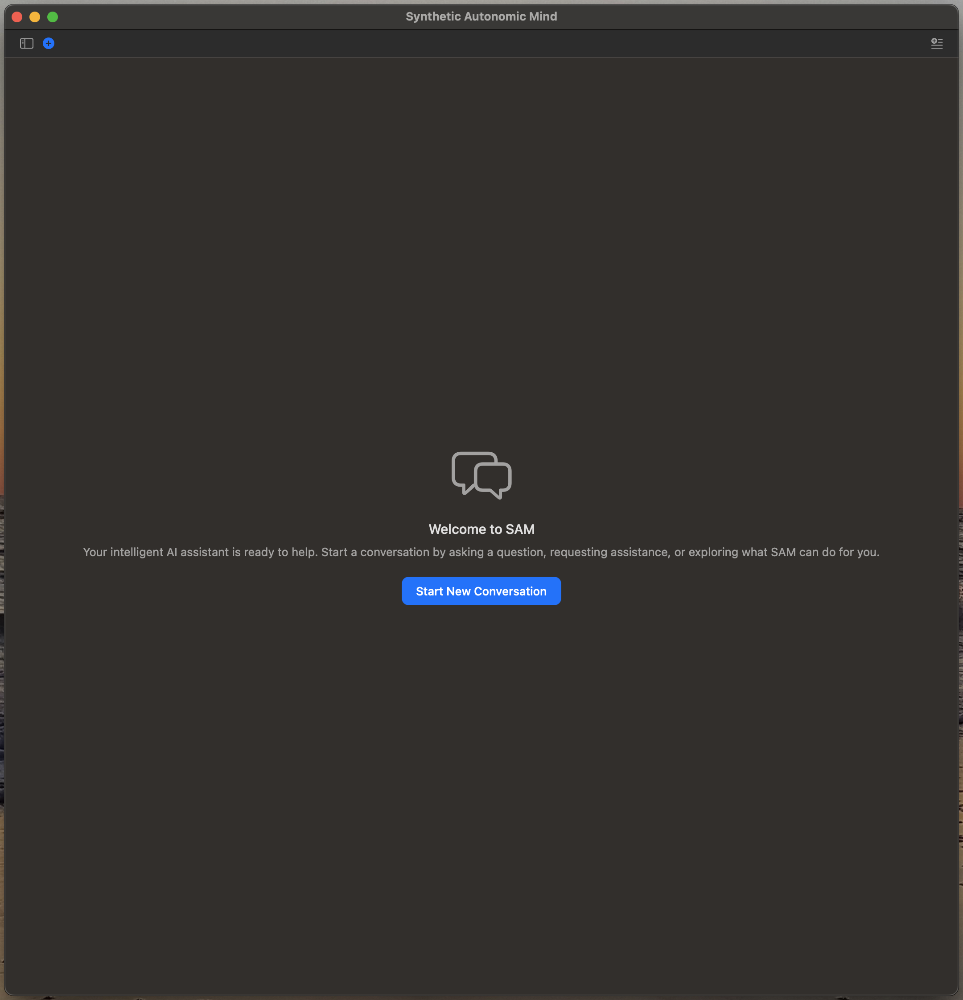
When you launch SAM, you'll see the main interface with three primary areas:
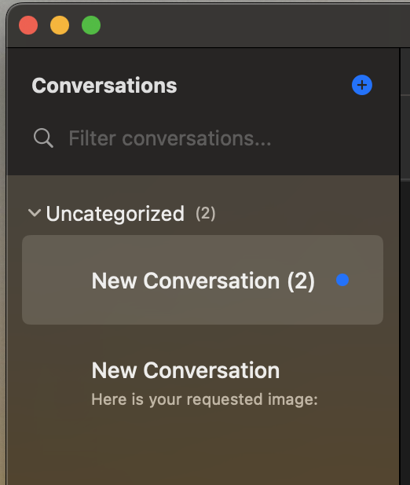
The sidebar provides access to all your conversations:
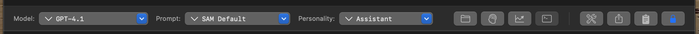
The model toolbar gives you control over which AI you're using and how it behaves. From left to right:
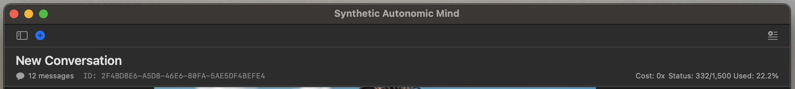
The conversation header displays conversation metadata and controls:
Top Left: - Conversation Title: Click to rename your conversation
Bottom Left: - Message Count: Number of messages in this conversation - Conversation ID: Unique identifier for this conversation
Top Right: - Mini-Prompts Indicator: Shows number of mini-prompts selected when panel is closed - Shared Topic Identifier: Shows shared topic name when enabled, blank otherwise
Bottom Right (GitHub Copilot specific): - Cost Multiplier: Token cost multiplier for current model - Status Used/Remaining: Tokens or requests used vs remaining - Usage Percentage: Percentage of quota consumed
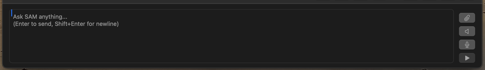
The input area at the bottom is where you interact with SAM:
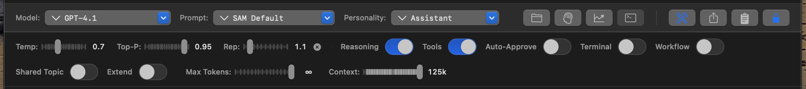
Click the parameters button to access fine-grained control over model behavior:
Sliders: - Temperature (Temp): Controls randomness (0.0 = focused and deterministic, 1.0 = creative and varied) - Top-P: Nucleus sampling for response diversity - Repetition Penalty (Rep): Reduces repetition in responses - Max Tokens Slider: Maximum length of SAM's response - Context Slider: How much conversation history SAM can see
Switches: - Reasoning: Enable chain-of-thought reasoning - Tools: Enable/disable tool usage (file operations, web search, etc.) - Auto-Approve: Automatically approve tool operations - Terminal: Show/hide terminal panel - Workflow: Enable workflow mode - Shared Topic: Enable shared workspace across conversations - Extend: Enable context extension
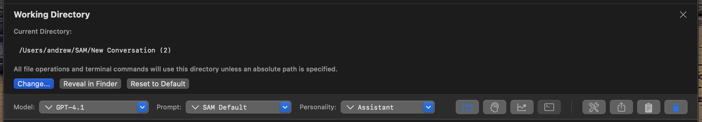
Each conversation has its own working directory where SAM reads and writes files:
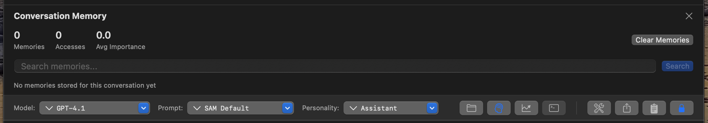
The memory toolbar shows and controls SAM's semantic memory:
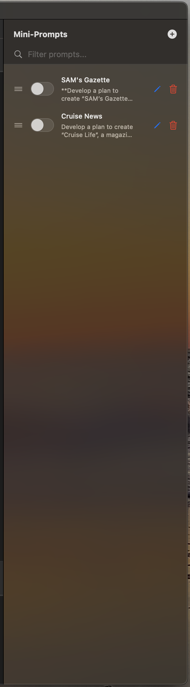
Mini-prompts inject consistent context into your conversations without repeating yourself. They're perfect for location-based queries, project details, or personal preferences.
How to Use: 1. Click the Mini-Prompts button in the conversation header 2. Toggle mini-prompts on/off for the current conversation 3. Create new mini-prompts in Preferences → Mini-Prompts 4. Context is automatically added to every message when enabled
Example Mini-Prompts:
SAM's Gazette - Automated local news aggregation:
Name: SAM's Gazette
Content:
**Develop a plan to create "SAM's Gazette", a newspaper serving {LOCATION}.**
- Your ONLY output must be the fully formatted newspaper (no summaries, bullet lists, or explanations before the complete newspaper).
- If you encounter issues fetching or scraping articles, ADAPT AND OVERCOME:
- Try alternative sources, deeper searches, local blogs, government or community pages, social media, or official press releases.
- Use all available tools and methods to extract genuine, detailed news content for each section.
- Do not stop or give up on a section due to initial errors-investigate, retry, and exhaust all reasonable options to gather information.
- If any section cannot be fully populated despite all possible efforts, you MUST:
- Clearly state at the end which sections are incomplete and provide a specific explanation for each (e.g., site inaccessible, no current articles available).
- Never omit or skip this explanation if there is missing content.
## REQUIRED OUTPUT FORMAT
# SAM's Gazette - Daily Edition for {LOCATION}
**Date: {DATE}**
---
## Top Headlines
- 3-6 most important stories from all sections.
### **{TITLE}**
*[{SOURCE NAME}]({SOURCE LINK}) - {DATE}*
{Concise, factual summary with detail.}
## Local/{CITY} News
- At least 3 local news articles.
## {STATE} Statewide News
- At least 3 statewide articles.
## Community Alerts
- At least 3 public safety, health, or event articles.
## Weather Updates
- At least 3 items: forecast, warnings, or notable events.
## Crime & Public Safety
- At least 3 crime/public safety articles.
## Politics & Government
- At least 3 politics/government articles.
## Major Events (Technology, Business, Sports, etc.)
- At least 3 major tech, business, or sports events.
---
**Thank you for reading SAM's Gazette!**
---
## INSTRUCTIONS & RULES
- For every newspaper section, you MUST:
1. Search for current, live news articles (not just headlines, timelines, or aggregators). If initial sources fail, use alternative sources and methods until you have content.
2. Scrape or fetch the full article content from direct news links. If a site blocks scraping, try to fetch, use alternate sites, or seek official press releases.
3. Extract and synthesize a detailed summary for each article based on its actual body (not just snippets or headlines).
4. Format the entire newspaper strictly according to the provided markdown template, including icons, bold section headers, and HRULE (`---`) separators.
5. Each article must include a unique, direct source link to the full story (never a homepage or generic timeline).
6. If unable to fully populate a section after all reasonable attempts, explain exactly which sections are incomplete and why at the end of the newspaper (never omit this step).
- Never output summaries, bullet lists, or generic link lists in place of the formatted newspaper.
- Never rely on homepage, timeline, or snippet-only links for summaries-always extract full article content.
- Review every section for compliance before publishing.
- If all sections are complete, do NOT include any explanation at the end.
Cruise News - Specialized industry news aggregation:
Name: Cruise News
Content:
Develop a plan to create "Cruise Life", a magazine for cruise enthusiasts. The magazine must include today's top headlines related to Norwegian (NCL), Royal Caribbean (RCCI), and MSC Cruises. For each article provide a concise summary of each story with a direct link to the original source page so the reader can go directly to the source for more information. Use proper emojis for each section header.
Focus company press releases, significant events, and general industry news. Research and identify specific locations or details for unique stories. Provide the response in markdown in the style of a magazine with all of the relevant sections.
Use Cases for Mini-Prompts: - Location-Based: Automatically include your location for weather, local search, or news - Project Context: Include tech stack, coding preferences, or project constraints - Personal Preferences: Name, role, communication style preferences - Specialized Workflows: Repeated tasks like news aggregation, report generation, or research briefs
Best Practices: - Keep mini-prompts focused on one type of context - Use different mini-prompts for different conversation types - Toggle off mini-prompts that aren't relevant to current conversation - Update mini-prompts as your context changes
Essential: - ⌘N: New conversation - ⌘,: Open Preferences - ⌘W: Close current window - ⌘Q: Quit SAM - ⌘?: Open Help - F: Global search across all conversations
Conversation: - ⌘T: Toggle tools on/off - ⌘Return: Send message - ⌘K: Clear chat input - ⌘L: Focus message input - ⌘[: Previous conversation - ⌘]: Next conversation
File Operations: - ⌘O: Open file/conversation - ⌘S: Save conversation - ⌘E: Export conversation - ⌘I: Import document
Tip: For a complete list of keyboard shortcuts, press ⌘? to open the in-app help.
Here are real examples showing how SAM handles different types of requests. These screenshots demonstrate SAM's web search, document processing, and image generation capabilities in action.
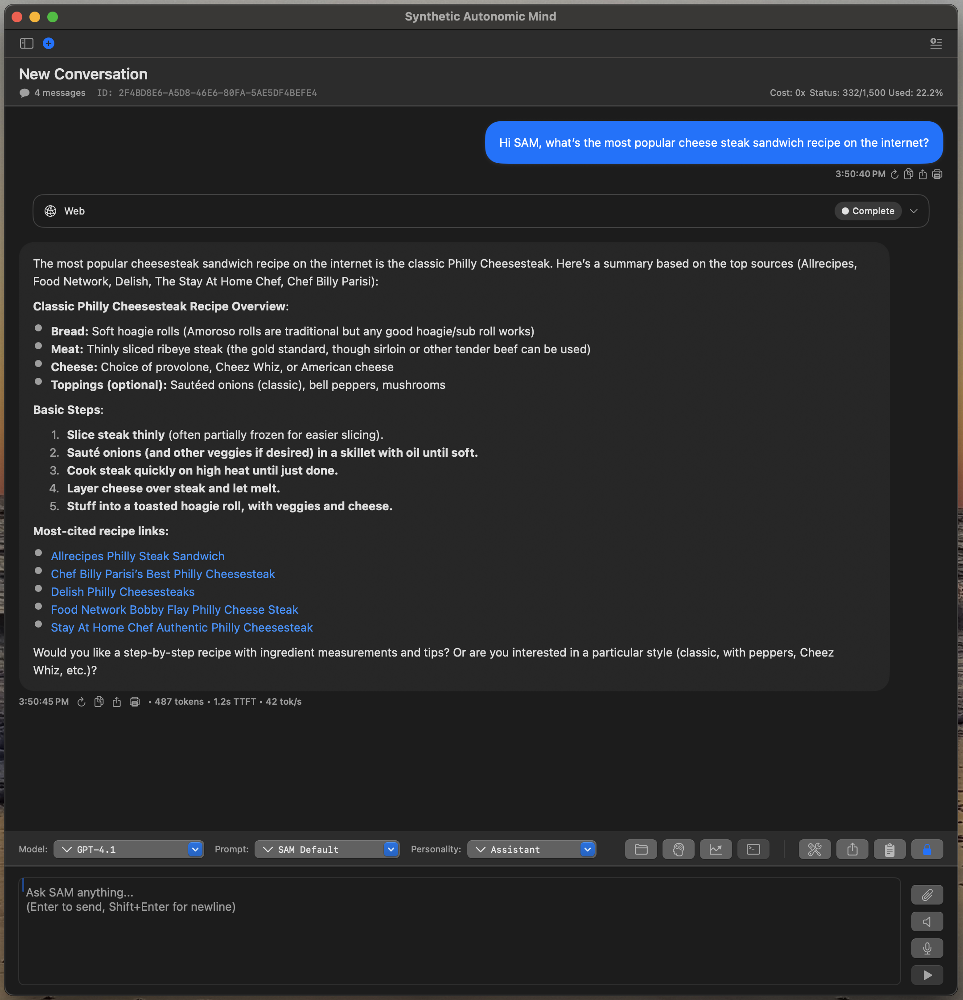
The user asks SAM to share the most popular cheesesteak recipe. SAM performs a web search, finds top recipes from multiple sources (Allrecipes, Food Network, Delish, Chef Billy Parisi), and provides a comprehensive summary with direct links to each recipe.
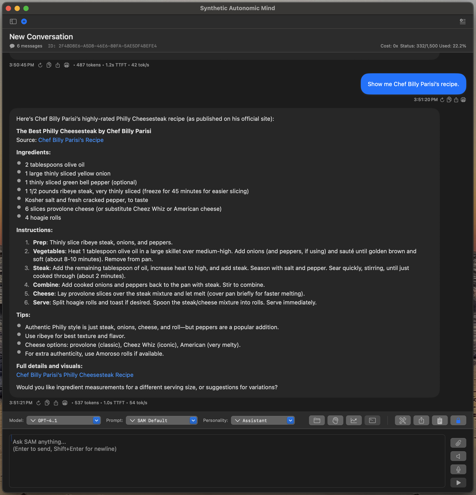
The user requests Chef Billy Parisi's recipe specifically. SAM retrieves the full recipe including ingredients, step-by-step instructions, tips, and a direct link to the source. No copy-pasting needed - SAM extracts and formats the complete recipe.
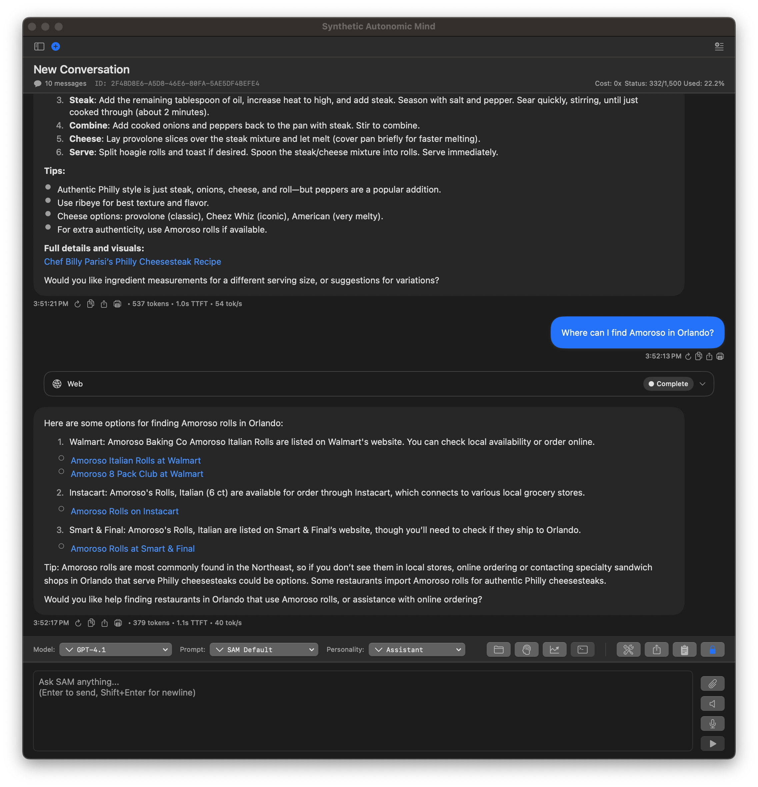
The user asks where to find Amoroso rolls in Orlando, FL. SAM performs location-aware searches and provides multiple shopping options (Walmart, Instacart, Smart & Final) with direct product links and local availability information.
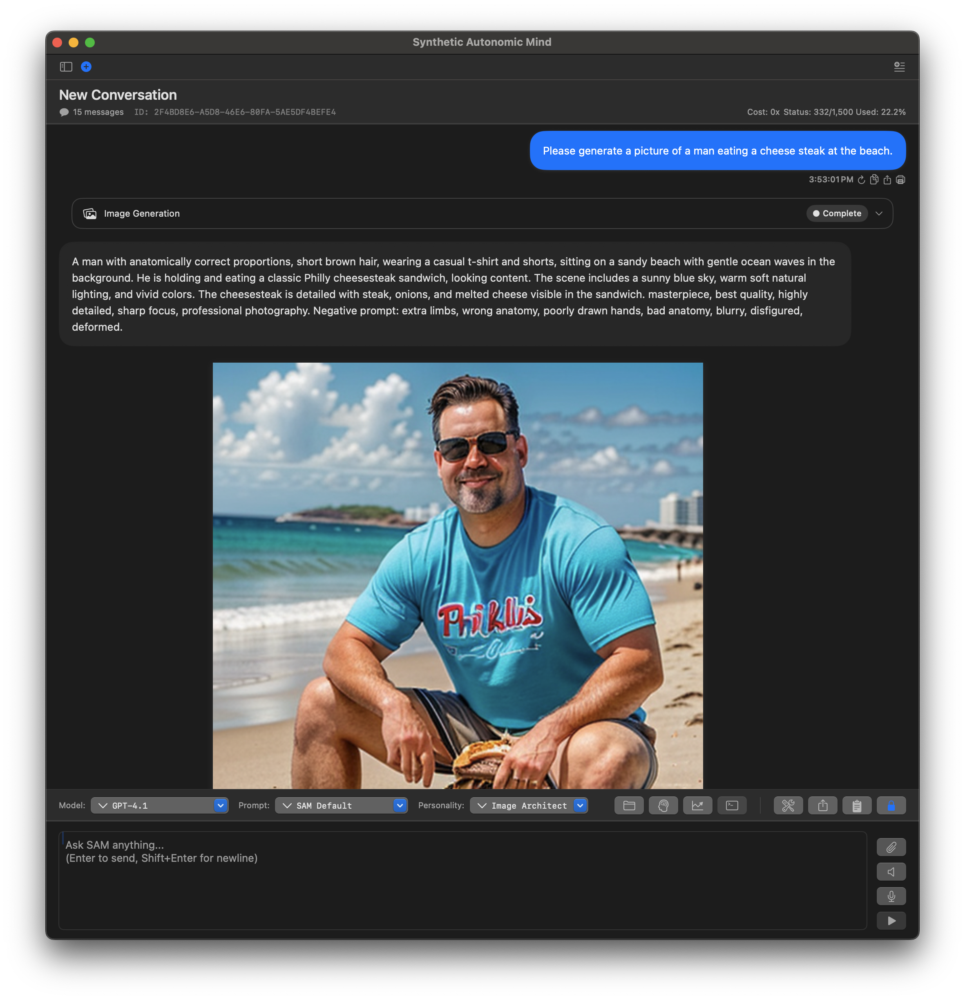
The user requests an image of a man eating a cheesesteak at the beach. SAM automatically crafts a detailed Stable Diffusion prompt, generates the image, displays it in the chat, and shows all generation parameters used (model, steps, guidance scale, etc.).
What These Examples Show: - Web Search Integration: SAM searches DuckDuckGo and presents results with links - Content Extraction: Fetches full articles and recipes, not just snippets - Location Awareness: Uses mini-prompts (user location) for localized searches - Image Generation: Creates detailed Stable Diffusion prompts and generates images - Natural Flow: Conversation flows naturally between different task types - Tool Transparency: Shows exactly which tools were used and their results
Now that you have SAM running, explore its features:
For Coding:
Read my Python project in ~/my-project and help me add a new feature for user authentication
For Research:
Research the latest developments in quantum computing and create a summary document
For Document Analysis: 1. Drag a PDF file into the chat window 2. Ask: "Summarize this document and extract the key points"
For Complex Projects: 1. Create a shared topic in Preferences 2. Create multiple conversations (frontend, backend, testing) 3. Enable shared topic in each conversation 4. Watch them collaborate on the same project
Having Issues? - Check Troubleshooting Guide - Visit GitHub Issues
Want to Learn More? - Read Architecture for technical details - See API Reference for programmatic access - Check Contributing Guide to contribute
You're all set! Start exploring SAM's features and see how it can help your workflow.
What's Next? → Features Overview